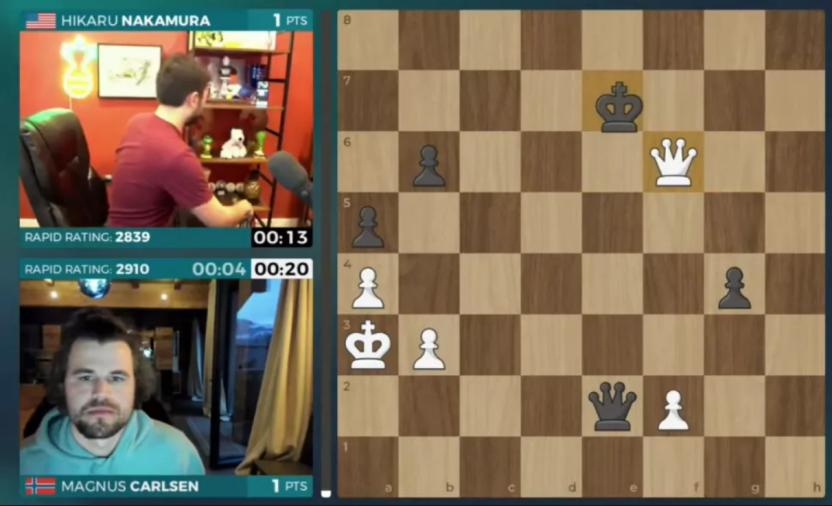

El Campeón Mundial de Ajedrez, Magnus Carlsen, abandonó un torneo en línea el jueves tras mover accidentalmente su dama a una casilla incorrecta, lo que permitió a su rival Hikaru Nakamura capturarla con su rey y ganar la partida. Chess.com calificó la jugada como un "horror mouseslip" para Carlsen, quien terminó en tercer lugar con $15,000. "Mouse slip" es cuando por falta de habilidad con el mouse, se deposita la pieza en una casilla distinta a la deseada, con efectos catastróficos.

El momento del fatal error ocurrió (imagen de arriba) cuando el gran maestro noruego, Magnus Carlsen, tenía la intención de mover su Reina a b6 para comer al peón localizado en esa casilla,
pero lamentablemente para sus intenciones termino soltando el clic del mouse en la mita del viaje en f6, dejando a la soberana a disposición del REY de Nakamura.
Con esto tomando la ventaja de la partida, y consiguiendo ganar la llave para disputar la final.
Después de vencer a Carlsen en el desempate, Nakamura ganó el torneo Chessable Masters y su premio mayor de $30,000 el viernes,
superando a Carlsen en el ranking del Champions Chess Tour de este año. Carlsen no defenderá su título de Campeón Mundial,
que ha ostentado desde 2013. El próximo campeón será Ian Nepomniachtchi o Ding Liren, quienes ahora compiten por el título en Astana, Kazajistán.
A pesar de la pérdida de esta semana, Carlsen no se ha retirado del ajedrez, ya que aún participa en el Champions Chess Tour, que incluye varios eventos más este año y culminará en una serie de eliminatorias y finales con una bolsa total de $500,000.